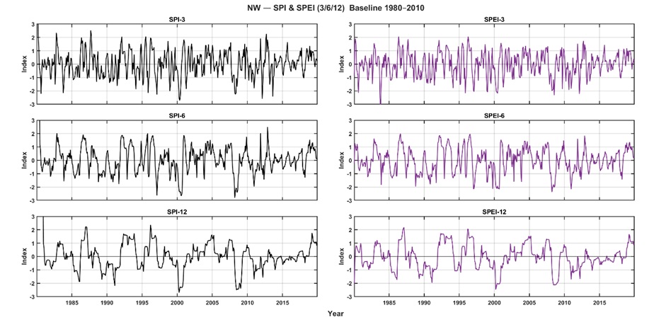
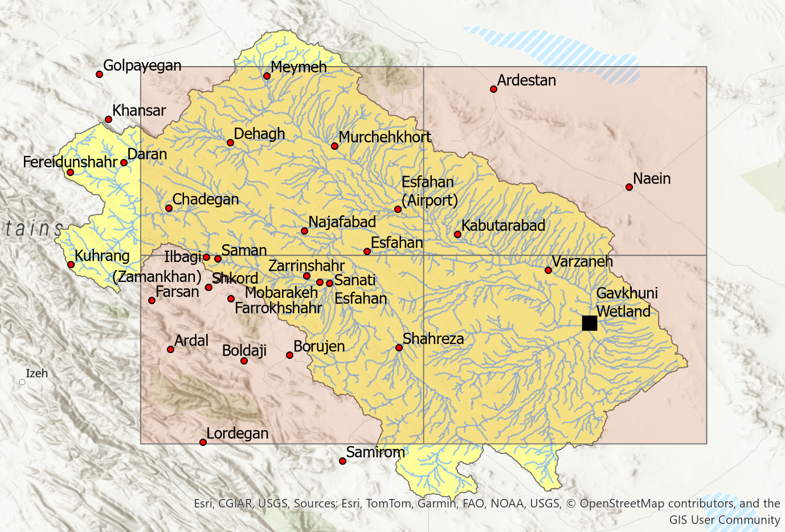

Ongoing Research
Drought and heatwave analysis for arid and semi-arid regions using SPI/SPEI, ERA5-Land reanalysis, and synoptic station observations.
Overview
I am working under the supervision of Dr. Sanaz Moghim on drought analysis in arid and semi-arid regions of Iran using the SPEI and SPI indices. Our current focus is the Zayandehrud River Basin and the wider Isfahan region, where we are developing forecasts to 2035 and analysing the evolution of drought hotspots in recent decades.
Data & Methods
- Climate data: ERA5-Land daily fields (1980–2024) harmonised with synoptic station records.
- Drought indices: SPI and SPEI at 3, 6, and 12-month accumulation scales.
- Spatial design: Basin divided into four quadrants (NW, NE, SW, SE) to localise hotspot behaviour.
- Analysis: long-term trends, frequency and severity of drought events, and comparison of index response across sub-regions.
Current Outputs
- Quarter-scale SPI/SPEI maps for the Zayandehrud Basin (1980–2020) highlighting persistent dry and wet zones.
- Preliminary projections of drought conditions towards 2035 under different climate scenarios.
- Reproducible scripts (Python / Google Earth Engine) for SPI/SPEI calculation and map generation.
Quarter regionalised view of the Zayandehrud River Basin used to evaluate each index and identify drought hotspots.

